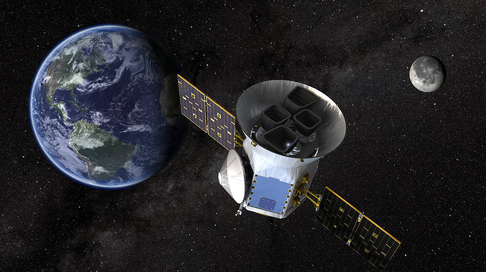

Transiting Brown Dwarfs
I study the formation and evolution of transiting brown dwarfs, primarily through NASA's TESS and Kepler missions. As objects that occupy the region in mass between planets and stars, some of them likely form like planets and others more like stars. However, it's unclear which formation mechanism is dominant. I am searching for the transition point between these two mechanisms, or in other words, I want to know what is the most massive planet you can form? I do this by discovering transiting brown dwarf systems and characterizing their orbital architectures, focusing primarily on eccentricities and orbital obliquities to probe migration history. The ultimate goal of my work is to discover method to differentiate brown dwarfs that form like planets from those that form like stars at the population level.